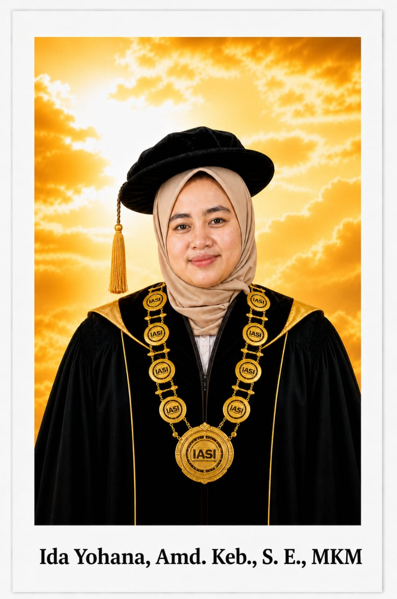
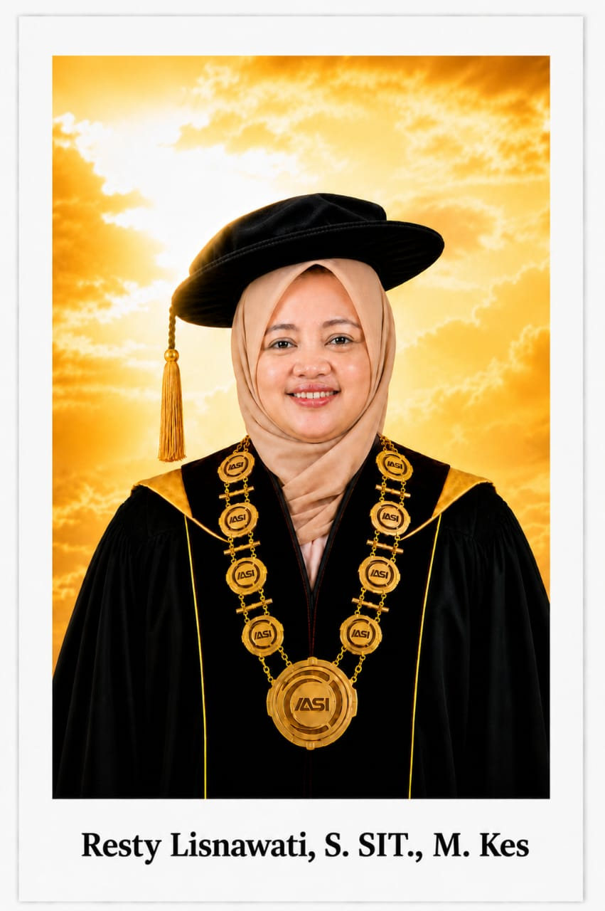

Membentuk ahli madya kebidanan yang unggul dalam pelayanan komunitas, kompeten, inovatif, serta siap kerja.
Assalamualaikum wr. wb.
Selamat datang di halaman resmi Program Studi D3 Kebidanan Institut Asyifa Indonesia. Sebagai prodi yang berfokus pada asuhan kebidanan komunitas bermutu, kami berdedikasi penuh untuk membimbing mahasiswa agar siap mengabdi di garis depan pelayanan kesehatan ibu dan anak. Didukung oleh fasilitas laboratorium praktikum yang lengkap dan dosen profesional, kami berkomitmen untuk melahirkan bidan-bidan yang memiliki kesiapan kerja tinggi, berintegritas mulia, serta tangguh dalam melayani masyarakat luas.
Wassalamualaikum wr. wb.

Ketua Program Studi Kebidanan Kampus I (Indramayu)

Ketua Program Studi Kebidanan Kampus II (Tangerang)
"Terwujudnya Program Studi Kebidanan yang unggul dalam pelayanan kebidanan komunitas dan mampu berdaya saing di Tingkat Jawa Barat Tahun 2030".
Berikut merupakan sebaran kurikulum studi program studi D3 Kebidanan Institut Asyifa Indonesia:
| Mata Kuliah | T | P | SKS |
|---|---|---|---|
| Pendidikan Agama | 1 | 1 | 2 |
| Pendidikan Kewarganegaraan | 1 | 1 | 2 |
| Pancasila | 1 | 1 | 2 |
| Bahasa Indonesia | 1 | 1 | 2 |
| Biologi Dasar Manusia | 2 | 1 | 3 |
| Kebutuhan Dasar Manusia | 1 | 1 | 2 |
| Konsep Kebidanan | 2 | 1 | 3 |
| Bahasa Inggris | 1 | 1 | 2 |
| Ilmu Sosial Budaya Dasar | 1 | 1 | 2 |
| TOTAL SKS | 11 | 9 | 20 |
| Mata Kuliah | T | P | SKS |
|---|---|---|---|
| Komunikasi dalam Praktik Kebidanan | 1 | 1 | 2 |
| Keterampilan Dasar Kebidanan | 1 | 2 | 3 |
| Etikolegal dalam Praktik Kebidanan | 1 | 1 | 2 |
| Asuhan Kebidanan Kehamilan | 3 | 2 | 5 |
| Anatomi Fisiologi | 1 | 1 | 2 |
| Farmakologi | 1 | 1 | 2 |
| Dokumentasi Kebidanan | 1 | 1 | 2 |
| Promosi Kesehatan | 1 | 1 | 2 |
| Praktik KDK | - | - | 4 |
| TOTAL SKS | 10 | 10 | 24 |
| Mata Kuliah | T | P | SKS |
|---|---|---|---|
| Asuhan Kebidanan Persalinan dan BBL | 3 | 2 | 5 |
| Asuhan Kebidanan Nifas dan Menyusui | 2 | 2 | 4 |
| Askeb Bayi, Balita dan Anak Pra Sekolah | 3 | 2 | 5 |
| Kesehatan Reproduksi dan KB | 3 | 2 | 5 |
| Praktik Klinik Kebidanan I (PKK I) | - | - | 5 |
| TOTAL SKS | 11 | 8 | 24 |
| Mata Kuliah | T | P | SKS |
|---|---|---|---|
| Askeb Kegawatdaruratan Maternal Neonatal | 2 | 2 | 4 |
| Kesehatan Masyarakat | 1 | 1 | 2 |
| Asuhan Kebidanan Komunitas | 2 | 2 | 4 |
| Gizi dalam Kesehatan Reproduksi | 1 | 1 | 2 |
| Praktik Klinik Kebidanan II (PKK II) | - | - | 10 |
| TOTAL SKS | 6 | 6 | 22 |
| Mata Kuliah | T | P | SKS |
|---|---|---|---|
| Asuhan Kebidanan Komplementer | 2 | 2 | 4 |
| Kewirausahaan | 2 | 1 | 3 |
| Dasar-Dasar Ilmu Manajemen | 1 | 1 | 2 |
| Mutu Layanan Kebidanan & Kebijakan Kesehatan | 1 | 1 | 2 |
| Metode Penelitian dan Statistik Dasar | 2 | 1 | 3 |
| Pendidikan Budaya Anti Korupsi | 1 | 1 | 2 |
| PKK Komunitas | - | - | 3 |
| TOTAL SKS | 9 | 7 | 19 |
| Mata Kuliah | T | P | SKS |
|---|---|---|---|
| Praktik Kebidanan Komprehensif | 0 | 8 | 8 |
| Laporan Tugas Akhir / KTI | 0 | 3 | 3 |
| TOTAL SKS | 0 | 11 | 11 |